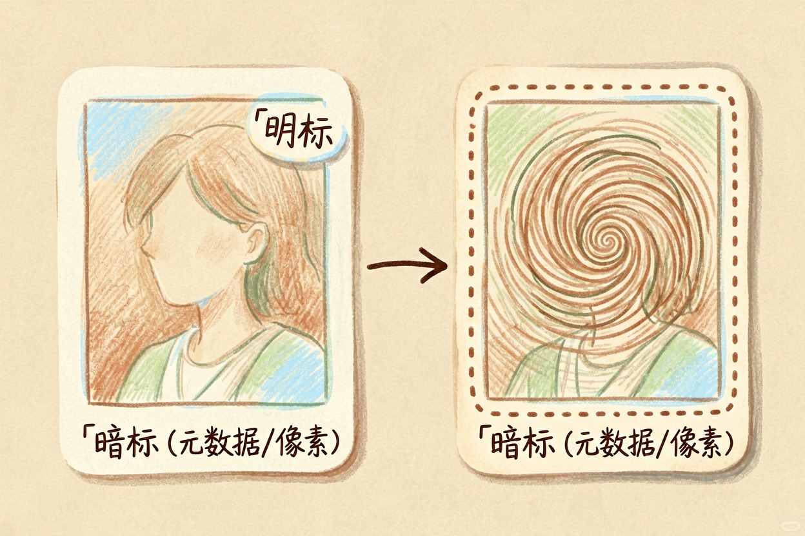
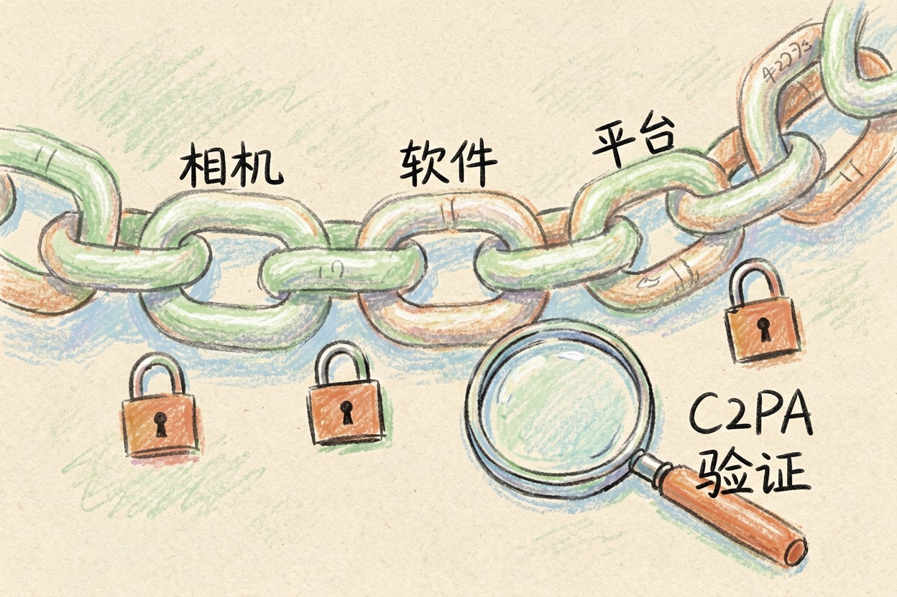
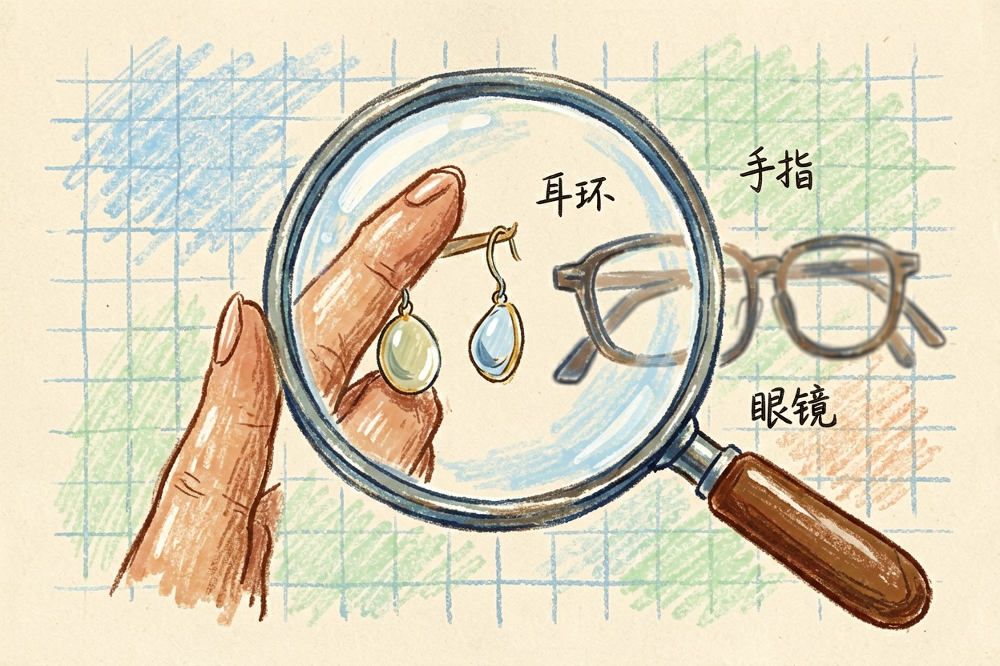
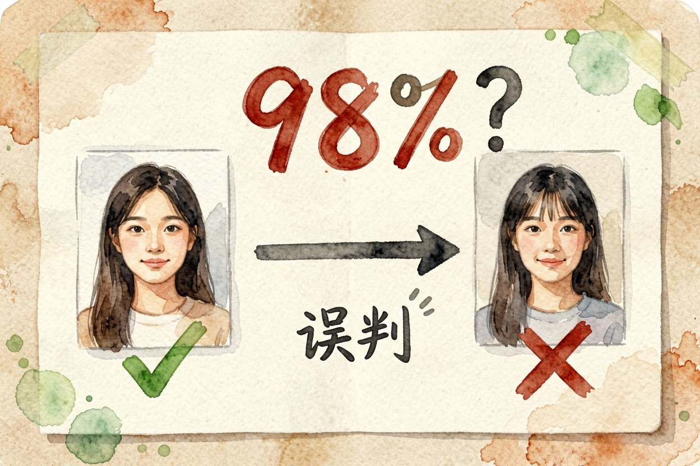

AI 内容水印是什么？怎么查一张图的来源 — Learntide
画面角上那行小字一裁就没，真正管用的标记藏在文件深处，可惜也常在转发里被磨掉。
AI 数字水印是什么：明标和暗标

AI 数字水印是什么？简单讲，它是给生成内容打的一个来源标记，分明暗两种。明的就是画面角落那行小字或图标，一眼能看见。暗的写在文件内部，肉眼看不到。
ai内容隐式标识说的正是后一类。它可能存在文件的元数据字段里，也可能以极轻微的方式嵌进像素本身，用专门的工具才读得出来。
两种各有短板。明标最容易处理，裁掉一圈就干净了。暗标扛得住普通转发，但也远谈不上牢固。
国内对生成内容的标识已有明确要求，服务方要在文件里加隐式标识，公开发布的内容还要有能看见的提示。两条并行，缺一条都算不到位。
隐式标识为什么这么容易丢
问题出在传播链路上。一张图从生成到你手机上，中间要经过若干次压缩和转码。
平台上传时会重新编码，为省流量还会剥掉大部分元数据。截图更彻底，直接把原文件换成了一张新图，什么都不剩。
查看图片附带的元数据（装了 exiftool 之后）
exiftool sample.jpg
重点看这几行：
Software / Creator Tool 生成或编辑用的软件
Digital Source Type 是否标为合成内容
Credit / Source 来源署名
Create Date 原始创建时间字段空着不代表就是真人拍的，只能说明这条线索断了。
还有一类是主动去除。把图丢进修图软件重新导出，或者过一遍放大、裁切、加滤镜，元数据基本就没了。技术上防不住，这是这类标识的先天弱点。
C2PA 想解决的是溯源

c2pa是什么？它是一套内容来源与编辑履历的技术规范，思路是给文件附一份带签名的记录：谁生成的、用什么工具、后来被谁改过。
签名的意义在于可验证。有人中途改了内容却没更新记录，校验就通不过。理想状态下，你点开一张图就能看到它的完整来路。
现实没这么顺。要整条链上的相机、软件、平台都支持才成立，眼下覆盖还很有限。它更像一个正在铺的地基。
怎么识别 AI 生成的图片

没有一招通吃的办法，只能几条线索一起看。
先看细节。手指数量、耳环是否成对、眼镜腿有没有接上、背景文字是否是真字，这些位置最容易露馅。
再看质感。皮肤过分均匀、发丝边缘发糊、光影方向互相打架，都值得怀疑。
然后反向搜图。找得到更早的版本和原始出处，基本能定性。找不到任何来源的高清大图，反而可疑。
最后看平台标注。不少平台已经会自动给生成内容加提示，这条最省事。音视频同理，口型和呼吸声都是查点。
别把检测结果当成定论

市面上的 AI 检测工具准确率参差，误判很常见。真人拍的照片被判成生成的，精修过的图更是重灾区。
拿一个分数去公开指认别人，风险不小。真有争议，应该找原始文件、拍摄记录和更早的发布时间点，而不是依赖一个概率值。
反过来，自己发布生成内容时，该标就标，别嫌麻烦。弄懂 ai数字水印是什么，一半是为了看清别人，另一半是为了把自己那份说明留清楚。
本文信息核对于 2026-08-08。AI 产品的价格、免费额度与功能变动频繁，实际以各工具官网当前说明为准。